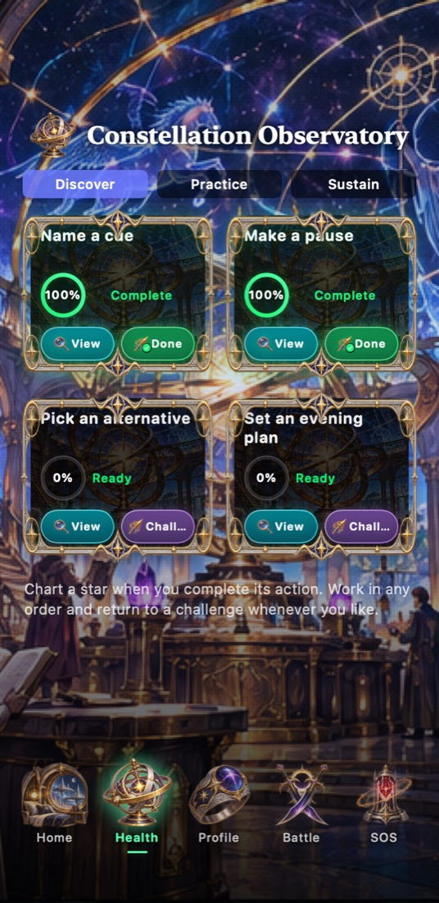

Personal habits
ResistBoss
For adults working to reduce or quit pornography use, masturbation, or both. Set a goal for each habit, record a private check-in, and explore the Astral Ring between milestones.

Inside ResistBoss
Choose your goals
Decide which habits to track. Each can have a quit goal or a weekly limit.
Make a private check-in
Record an urge, a moment you got through, or a setback to see patterns over time.
Explore the Astral Ring
Visit the Constellation Observatory for challenges, or choose a hero for a solo game.